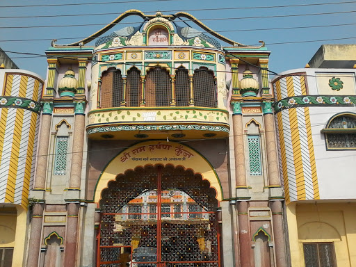
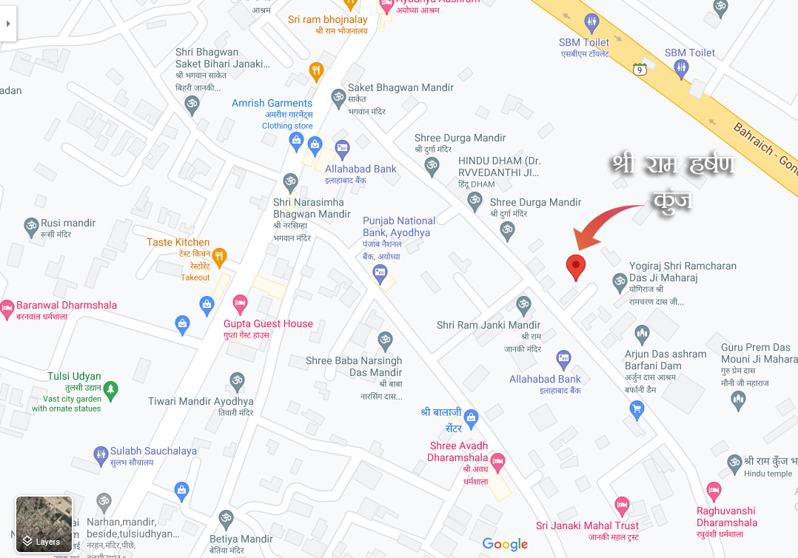

श्री हर्षण साहित्य
परिचय
साहित्य
प्रवचन
निर्णय पत्र
सम्पर्क करें
हमारा पता:
श्री राम हर्षण कुंज, नया घाट, परिक्रमा मार्ग, अयोध्या उत्तर प्रदेश, भारत (पिन कोड:- २२४१२३)
Address:
Shri Ram Harshan Kunj, Naya Ghat, Parikrama Marg, Ayodhya Uttar Pradesh India (Pincode:- 224123)

